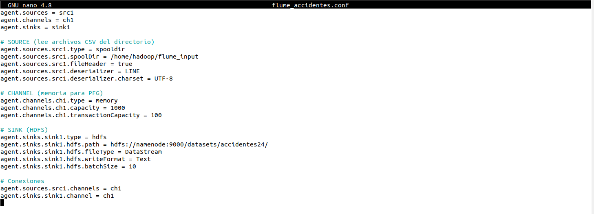

Configuración del agente Apache Flume
Una vez definido el objetivo de la ingesta de datos mediante Apache Flume, es necesario configurar el agente encargado de realizar el proceso de transferencia desde el sistema de archivos local hasta HDFS.
La configuración se realiza mediante un fichero de propiedades
denominado flume_accidentes.conf, en el que se
definen los componentes que forman parte del flujo de datos y
las relaciones existentes entre ellos.

Figura 39.
Configuración del agente Apache Flume mediante el fichero
flume_accidentes.conf.
Fuente: elaboración propia.
Objetivo de la configuración
El objetivo es establecer un flujo automático de ingesta en el
que los archivos incorporados al directorio local
/home/hadoop/flume_input sean detectados por
Apache Flume y transferidos posteriormente al sistema de
archivos distribuido HDFS.
Para ello, el agente está compuesto por tres elementos fundamentales: Source, Channel y Sink.
1. Definición del agente
En primer lugar, se declara la existencia del agente y de los componentes que lo integran:
agent.sources = src1
agent.channels = ch1
agent.sinks = sink1Esta configuración indica que el agente dispone de una fuente de datos denominada src1, un canal de comunicación denominado ch1 y un mecanismo de almacenamiento final denominado sink1.
| Componente | Identificador | Función |
|---|---|---|
| Source |
src1
|
Entrada de los datos al agente Flume. |
| Channel |
ch1
|
Almacenamiento temporal de los eventos. |
| Sink |
sink1
|
Destino final de los datos en HDFS. |
2. Configuración de la Source
La fuente (Source) constituye el punto de entrada de los datos dentro de Flume. En este caso se utiliza el componente spooldir, diseñado para monitorizar un directorio del sistema de archivos y detectar automáticamente la aparición de nuevos ficheros.
agent.sources.src1.type = spooldir
agent.sources.src1.spoolDir = /home/hadoop/flume_input
agent.sources.src1.fileHeader = trueLa propiedad spoolDir especifica el directorio que será monitorizado por Flume. Cada vez que se incorpora un nuevo archivo en esta ubicación, el sistema lo procesa automáticamente y genera eventos internos que serán enviados al canal configurado.
La opción fileHeader permite incluir información adicional sobre el archivo procesado, facilitando tareas de trazabilidad y auditoría de los datos.
3. Configuración del Channel
El canal (Channel) actúa como una memoria intermedia entre la fuente y el destino. Su función principal es garantizar la transferencia de los eventos, desacoplando la velocidad de recepción de datos de la velocidad de escritura en el sistema de almacenamiento.
agent.channels.ch1.type = memory
agent.channels.ch1.capacity = 1000
agent.channels.ch1.transactionCapacity = 100En este proyecto se utiliza un canal en memoria (memory), adecuado para entornos de laboratorio y escenarios formativos.
La propiedad capacity determina el número máximo de eventos que pueden almacenarse simultáneamente, mientras que transactionCapacity establece el número máximo de eventos procesados en cada transacción.
4. Configuración del Sink
El componente Sink representa el destino final de los datos capturados por Flume. En este caso se configura un sumidero HDFS encargado de almacenar la información en el clúster Hadoop.
agent.sinks.sink1.type = hdfs
agent.sinks.sink1.hdfs.path = hdfs://namenode:9000/datasets/accidentes24/
agent.sinks.sink1.hdfs.fileType = DataStream
agent.sinks.sink1.hdfs.writeFormat = Text
agent.sinks.sink1.hdfs.batchSize = 50La propiedad hdfs.path define la ubicación dentro del sistema distribuido donde se almacenarán los datos.
Por su parte, fileType establece el modo de escritura empleado por Flume, mientras que writeFormat indica que la información será almacenada como texto plano.
El parámetro batchSize determina el número de eventos que serán enviados a HDFS en cada operación de escritura, mejorando la eficiencia del proceso.
5. Conexión entre Source, Channel y Sink
Una vez definidos los tres componentes principales, es necesario establecer la relación entre ellos para completar el flujo de ingesta.
agent.sources.src1.channels = ch1
agent.sinks.sink1.channel = ch1La Source envía los eventos al Channel, mientras que el Sink recupera dichos eventos desde el canal para almacenarlos finalmente en HDFS.
Generación de los ficheros en HDFS
Durante el proceso de ingesta, Apache Flume almacena la información en HDFS generando automáticamente ficheros de salida con el prefijo accidentes24.
Este comportamiento forma parte del mecanismo interno de escritura de Flume, que puede generar múltiples archivos como resultado del proceso de transferencia.
Posteriormente, estos ficheros pueden ser procesados mediante trabajos MapReduce o Hadoop Streaming, ya que HDFS permite trabajar con el conjunto de datos independientemente de la fragmentación física de los archivos.
Ejercicio resuelto: ingesta con Flume
El funcionamiento del agente puede resumirse mediante las siguientes etapas:
El usuario copia el fichero
TABLA_ACCIDENTES_24.csv en el directorio
monitorizado:
/home/hadoop/flume_inputLa Source detecta automáticamente el nuevo archivo incorporado al directorio monitorizado.
Los registros del fichero son transformados en eventos Flume.
Los eventos son almacenados temporalmente en el Channel.
El Sink recupera los eventos y los transfiere al sistema de archivos distribuido HDFS.
Los datos quedan disponibles en HDFS para su posterior análisis mediante Hadoop Streaming y MapReduce.
Conclusión
La configuración desarrollada permite automatizar la ingesta de información desde el sistema de archivos local hacia HDFS. Apache Flume actúa como mecanismo de transferencia basado en eventos, conectando la fuente de datos local con el sistema de almacenamiento distribuido.
De esta manera, el estudiante puede observar de forma práctica
el recorrido de los datos desde el fichero
TABLA_ACCIDENTES_24.csv hasta su almacenamiento
en HDFS y su posterior disponibilidad para tareas de
procesamiento distribuido.
Referencia
Esta práctica se encuentra relacionada con el apartado correspondiente a la ingesta de datos mediante Apache Flume y con la arquitectura Hadoop desarrollada en el proyecto.